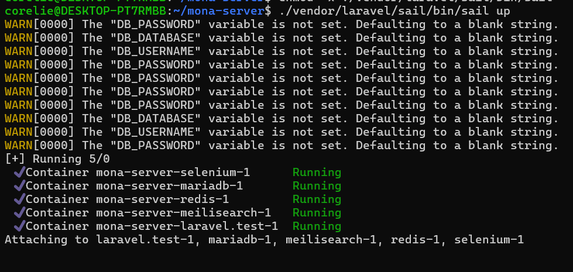

Le projet Mona est une application mobile qui permet de découvrir des oeuvres d'art public à Montréal. L'application utilise la géolocalisation pour permettre à l'utilisateur de découvrir des oeuvres d'art à proximité et de les ajouter à sa collection.
Je participe au développement serveur du projet pendant la session d'été 2024 (du 1er mai 2024 au 15 août 2024). Les objectifs de cette participation sont dans un premier temps de me familiariser avec le code existant et ensuite de travailler avec le reste de l'équipe serveur ainsi que la partie de recherche du projet afin d'améliorer l'interface du serveur.
Les languages utilisés sont surtout Php et SQL.
Le projet est sous la supervision du profeseur Guy Lapalme.
Cette semaine je n'ai malheureusement pas pu assister à la réunion. Cependant j'ai pu commencer en créeant cette page afin d'y consigner mes rapports hebdomadaires. Je me suis également familiarisée avec l'histoire de Mona, en lisant le blogue et les rapports, et avec l'application en temps que telle en profitant de mon temps libre pour aller la tester dehors. J'ai également été intégrée aux communications de groupes Element et au git du projet.
Cette semaine j'ai eu la chance de rencontrer l'équipe. Nous avons pu déterminer les rôles et il a été décidé que je travaillerai sur le serveur avec Simon. J'ai également été invitée à participer à une visite du campus de l'Université de Montréal afin de découvrir différentes oeuvres qui y sont exposées et d'utiliser d'avantage l'application. J'ai également eu une courte réunion avec Simon qui m'a un peu expliqué le fonctionnement du serveur et m'a indiqué ce que je devais installer pour me connecter au serveur. J'ai commencé à faire cette installation mais j'ai malheureusement rencontré de nombreux problèmes qui se sont poursuivis dans la semaine suivante.
Cette semaine a surtout été marquée par les soucis d'ordinateur et d'installation que j'ai pu rencontrer et qui ne sont malheureusement toujours pas résolus. J'espère pouvoir en discuter avec l'équipe lors de la réunion du 23 mai. J'ai du installer Docker et Laravel pour pouvoir travailler sur le serveur ce qui n'était pas des applications avec lesquelles j'étais familière. J'ai eu plusieurs difficultées lors de cette installation puisque je ne comprenais pas trop les commandes à effectuer et les erreurs que je rencontrais. Notamment je n'utilisais pas la commande git correcte pour cloner le projet et je n'autorisais pas correctement le programme à s'executer sur mon ordinateur. J'ai finallement, par hasard, pu voir quelqu'un d'autre exécuter un programme similaire et j'ai pu comprendre comment accorder les permissions correctement. Malheureusement, je n'ai pas pu avancer plus loin, une fois que j'exécute la commande pour lancer le serveur, celle-ci semble fonctionner dans le terminal mais je ne peux pas accéder à l'application en localhost. J'ai fait part de ce problème à Simon qui ne savait pas trop lui non plus d'où cela pouvait venir.
J'ai commencé cette semaine par une rencontre avec Léna et Sarah pour faire le point sur notre avancement. Sur les conseils de Léna j'ai commencé à lire le wiki du github pour essayer de trouver des réponses à certains de mes problèmes, ce qui malheureusement n'a pas été le cas mais le wiki ainsi que le miro de la structure du serveur ont permis de m'orienter un peu plus dans le projet en général. Lundi j'ai eu une autre rencontre avec Simon qui m'a aidé à résoudre certains problèmes (voir plus bas). Il a également été d'une grande aide pour m'expliquer mieux comment naviguer mon terminal et les commandes que je pouvais utiliser. Cependant un problème de connexion à la base de données persiste (SQLSTATE[HY000] [2002] Connection refused) et nous n'avons pas encore trouvé de solution.
En lançant le code j'obtenais les warning ci-dessous:
Ces erreurs provenait du fait que mon fichier .env n'existait pas.
Il existe par défaut dans le dossier mona-serveur un fichier .env.example (visible avec la commande ls -a) qui contient les données nécessaires mais qui par son nom n'est pas accessible.
J'ai donc copié ce fichier et renommé la copie en .env ce qui a réglé ce problème.
cp .env.example .env
Cette semaine j'ai continué à discuter avec Simon pour essayer de comprendre mes problèmes de connexion. J'ai réussi à comprendre que certains problèmes provenait du fait que le fichier .env n'était pas connecté correctement. Il fallait modifier le db host pour qu'il soit connecté à mariadb (voir le tutoriel complet la semaine d'après). En attendant de résoudre ce problème j'ai commencé à lire le code du serveur pour essayer de comprendre comment il fonctionne. J'ai commencé à noter ce que je comprends du code au fur et à mesure dans un fichier Miro pour m'aider à m'y retrouver. Le Miro est disponible ici.
J'ai débuté cette semaine par un appel avec Simon pour essayer une fois de plus de résoudre mes problèmes. Après de nombreuses tentatives infructueuses j'ai décidé que j'allais effacer entièrement tout le système Linux de mon ordinateur ainsi que docker afin de recommencer tout au propre. Une fois cela fait et quelques recherches supplémentaires sur des commandes qu'il aurait pu me manquer j'ai enfin réussi à me connecter au serveur en localhost! Voir le tutoriel plus bas pour toutes les étapes précises à faire en cas de problème similaire. Après cela je n'ai malheureusement pas pu avancer plus loin puisque j'avais deux examens cette semaine.
Voici les étapes à suivre pour se connecter au serveur en localhost (sur windows ou linux):
git clone (lien du projet)
cd mona-serveur cp .env.example .env vim .envDB_HOST=mariadb ./vendor/laravel/sail/bin/sail up -dchmod +x ./vendor/laravel/sail/bin/sail
./vendor/laravel/sail/bin/sail composer update./vendor/laravel/sail/bin/sail composer install./vendor/laravel/sail/bin/sail php artisan key:generate./vendor/laravel/sail/bin/sail down ./vendor/laravel/sail/bin/sail up./vendor/laravel/sail/bin/sail down
Cette semaine j'ai eu plusieures réunions avec différents membres de l'équipe pour que je puisse enfin pouvoir commencer à vraiment travailer sur le serveur. J'ai commencé par la réunion habituelle avec Léna et Sarah pour discuter de notre avancement, Léna m'a indiqué que je devrais contacter Camilla qui fait partie de l'équipe de recherche de Mona et pour qui l'interface admin est surtout utile, elle m'a également mentionné qu'elle aimerait que je travaille sur un système de tags pour les photos et les oeuvres. Lundi j'ai pu avoir un appel avec Camilla que je remercie grandement d'avoir pris le temps de me parler juste avant son départ en vacances! Elle m'a expliqué les besoins les plus importants de l'interface:
Cette semaine j'ai pu commencer à travailler sur le système de tags. En consultant le code je me suis aperçue qu'il semblait déjà avoir eu un début de travail sur cela, en consultant l'historique github j'ai pu m'apercevoir qu'il s'agissait du travail de Natacha Rivière qui avait commencé là dessus en hiver 2023. En consultant ses rapports j'ai repris là où elle s'était arretée.
Elle avait configuré une page pour l'ajout de tags mais une fois que l'on ajoutait un tag nous étions redirigés vers une page d'erreur. J'ai réglé ce problème en ajoutant un target à la balise form dans la page d'ajout de tags pour éviter d'être redirigé là ou le form envoyait les données.
J'ai également pu commencer à travailler sur la page de recherche par tags, cependant j'ai rencontré certains problèmes. Je n'étais pas capable de modifier les fichier vue.js et donc était incapable d'ajouter du javascript dans ma page (puisque la page était insérée dans un fichier vue qui comprenais déjà du javascript cela retournait des erreurs). Jétais également incapable de créer des nouvelles routes et donc de faire pointer un bouton Advanced search vers cette page là, j'ai cependant pu modifier la route du bouton create artwork pour pointer vers cette page là en attendant donc j'ai pu avancer sur mon travail comme ça.
J'ai parlé de mon problème avec vue.js à Simon qui m'a dit qu'il pensait que cela puisse provenir du fait que nous utilisions webpack et qu'il était probable que je doive faire une certaine commande npm mais il ne savait pas laquelle. Il m'a envoyé un lien vers de la documentation Laravel, malheureusement j'ai suivi les commandes de ce liens et à chaque étape n'ai fait que rencontrer de plus en plus d'erreurs sur des commandes qui devraient normalement fonctionner. Au bout de plusieures heures tout ce que j'avais pu faire c'est de complètement faire disparaitre les vues, j'ai donc réinstallé le projet en entier de 0 et nous avons convenus avec Simon de se rencontrer la semaine prochaine.
J'ai commencé cette semaine par une rencontre avec toute l'équipe technique de Mona ainsi que Guy Lapalme afin de présenter ce que j'avais fait à date et ce que je comptais faire dans les semaines à venir (surtout les points discutés avec Camilla précédemment). J'ai plus tard dans la journée également compris que mon problàme avec les routes ne venait pas du même problème que mes problèmes avec vue.js, il fallait simplement faire attention à l'ordre des routes.
J'ai ensuite eu un appel avec Simon ce qui m'a débloqué au niveau des vues. Le problème était qu'il fallait bien faire npm run dev comme je faisais mais il ne fallait absolument pas faire npm install au préalable, cela semble visiblement modifier quelque chose qui avait complètement cassé mon code.
Le problème des vues étant résolus j'ai pu réellement m'attaquer à la recherche par tags. J'ai créé une vue pour afficher le formulaire des paramètres de recherches et fait en sorte que cette vue renvoie les critères sélectionnés au Artwork controller. Celui-ci s'occupe alors de filtrer les oeuvres sélectionnées et de les mettres en cache. Cela permet ensuite de les retrouver facilement lorsque l'on est ensuite redirigé sur la page des artworks. Cela permet également de pouvoir trier et rechercher uniquement sur ces oeuvres. Pour l'instant cela onctionne pour la recherche par tags sur les oeuvres et la recherche par tags sur les catégories, je n'ai pas encore eu le temps de m'occuper des photos. J'ai également ajouté un bouton pour réinitialiser la recherche.
J'ai commencé cette semaine en faisant le point avec Léna et Sarah. Nous avons un peu manqué de temps donc avons convenus avec Léna de faire une réunion uniquement pour le serveur admin avec Camilla la semaine suivante. J'ai de mon coté continué sur la recherche par tag photo mais je n'ai pas pu testé ce que j'ai fais car je n'ai pas accès aux photos en local. J'ai commencé à travailler sur l'esthétique du site en rajoutant notamment des couleurs qux tableaux et boutons, ce que Camilla m'avait suggérée. J'ai ensuite travaillé sur l'apparence de la page Chiffre clés (qui éventuellement serait la page d'acceuil du site). Maintenant un 'fun fact' sur les statisques du site est choisi et calculé au hasard à chaque affiche de la page (éventuellement je compte le conserver pendant quelques heures en caches mais cela n'est pas encore fais pour permettre de faire la démonstration). Ce 'fun fact' est ensuite illustré au moyen d'un diagramme en cercle avec les statistiques calculées.
Cette semaine a débuté par une importante réunion entre Léna, Camilla et moi. Nous avons discuté du fait que la stucture actuelle du site ne résulte pas d'une vision globale mais plus d'un ensemble de petites additions au fil du temps, ce qui ne résulte pas en un ensemble cohérent permettant de gérer au mieux les données. Nous en avons conclus qu'il était probablement temps de repenser la structure du site au complet en oubliant le modèle qui avait déjà été fait. Cela nous permettrait alors d'avoir quelque chose de clair et de vraiment pratique pour nos besoins.
Nous avons donc convenus de nous rencontrer à nouveau pour en discuter de façon plus concrète. En attendant nous allions étudier le fonctionnement de d'autres sites similaires et créer des benchmark de comparaison afin de pouvoir discuter de ce qui nous plaisais ou pas sur chacun des sites (ce que j'ai fait dans la semaine). On a également discuté du fait qu'il serait pratique de pouvoir créer un export en json des données d'une recherche ce que j'ai pu faire pour les oeuvres d'art cette semaine. J'ai également travaillé sur l'établissement d'une analyse des fonctionnalitées de l'interface, afin que l'on sache ce qu'on avait déjà et quelles étaient les pages qui fonctionnaient ou pas.
J'ai fait cela dans un miro (lien) et j'ai également analysé le code pour comprendre d'où venaient les problèmes et j'ai suggéré des solutions possibles. En faisant cela j'en ai profité pour corriger certains bugs légers. La semaine c'est terminée par une réunion avec Léna et Sarah où j'ai pu présenter mon benchmark, nous en avons discuté rapidement mais reviendrons plus en détails dessus lors de la prochaine réunion avec Camila.
Cette semaine j'ai d'abord pu assister à une réunion avec Léna, Barbara et Camilla portant sur le design de l'application mobile et notamment sur les fiches d'oeuvres. Bien que je ne travaille pas personnellement sur l'application mobile il était très intéressant de voir comment le processus de design pouvait se passer. Cela a permis de me donner un peu plus de clés sur certaines choses auxquelles il faut penser lors de ce processus.
J'ai ensuite porté un peu plus attention à mon benchmark et notamment le positionnement des éléments récurrents. Grâce à ces observations j'ai commencé à travailler sur un prototype Figma rassemblant la plupart des points que j'avais pu observer lors du benchmark.
J'ai également terminé l'export des données de Concordia (il était nécéssaire d'avoir les données des oeuvres de Concordia pour un projet avec eux) en rajoutant une fonction permettant de filtrer par owner afin de n'avoir que les oeuvres de Concordia et en rajoutant des informations sur les photos (la date et l'heure, le commentaire associé, la note et l'user l'ayant pris). J'ai également contacté Simon afin qu'il m'envoie les dernières données de la base. Ensuite j'ai pu exporter ces données et les envoyer à Léna.
Cette semaine j'ai continué à travailler sur le Figma afin de pouvoir le présenter et en discuter lors de notre réunion du 29 juillet avec Léna et Camila. Lors de cette réunion nous avons pu discuter de mon benchmark et de mon Figma ainsi que du benchmark de Camila qui avait fait un travail très approfondi. Nous avons pu discuter de nombreuses idées au cours de cette séance qui a été très enrichissante. Il a été convenu que nous allions nous réunir à nouveau dans quelques semaines avec Suzanne Paquet afin de discuter des changements proposés et établir un plan. En attendant cette réunion je dois préparer une présentation reprenant les points mentionnés
Cette semaine j'ai encore pu assister à une réunion sur l'interface mobile où nous avons pu discuter des fiches de l'oeuvres et de ce qu'elles devaient inclures ou pas. J'en ensuite surtout travaillé à la préparation de mon rapport qui était pour le 9 août. J'ai eu une réunion le 8 août avec Léna et Sarah où nous avons pu discuter de l'avancement de nos rapport et j,ai pu expliquer à Sarah ce sur quoi j'avais travaillé depuis notre dernière rencontre. Léna nous a également conseillées d'envoyer nos rapports au professeur Guy Lapalme avant de les soumettres, ce que j'ai fait et il m'a très gentimment fait plusieurs suggestions afin que je puisse l'améliorer avant de le rendre.
Cette semaine j'ai complété plusieurs petits problèmes qui me restaient dans l'interface. J'ai réglé le problème qui faisait que l'on devait refresh la page avant de voir les tags ajoutés, j'ai permis la suppression des tags et aussi effacé les données d'une recherche avancée lorsque l'on change de page. J'ai également réglé le problème que Camila m'avait mentionné sur le fait que certaines oeuvres ne pouvaient pas s'ouvrir correctement, cela provenaient de commentaires de test sans photos qui avaient étés ajoutés lors de tests par de précédents développeurs. Maintenant le code vérifie si une photo existe avant d'essayer de l'appeler. J'ai ensuiet eu une réunion avec Léna et Simon le 14 août pour que l,on puisse discuter de la possibilitée de déployer mes changements. Étant donné que le serveur de dev n'est pas encore complètement fonctionnel c'est un peu compliqué, nous avons cependant convenus de se rencontrer la semaine prochaine avec Simon afin de discuter de mes changements.
Je me suis ensuite surtout concentrée sur la préparation de ma présentation finale qui est le 20 août.